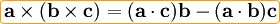

Tercera Ley de Newton o Ley de acción y reacción.
Por cada fuerza que actúa sobre un cuerpo, éste realiza una fuerza igual pero de sentido opuesto sobre el cuerpo que la produjo. Dicho de otra forma: Las fuerzas siempre se presentan en pares de igual magnitud y sentido opuesto y están situadas sobre la misma recta.
Esta es la forma fuerte de la tercera ley, junto con las anteriores, permite enunciar los principios de conservación del momento lineal y del momento angular.
Verificar la Tercera Ley de Newton.
Llena la botella con un tercio de agua y agrégale las pastillas efervescentes (observa la fotografía). Inmediatamente después de que empiecen a efervescer las pastillas, coloca el tapón de hule en la boquilla lo mejor que puedas. Incluso golpearla con el pise para que se tape muy bien. Si no conseguiste un tapón de hule puedes intentar con un pedazo de zanahoria que se ajuste perfectamente. Coloca la botella "boca abajo" dentro de un vaso o una taza que te servirá de plataforma. Espera unos momentos a que la presión aumente y se zafe el tapón.
 ¿Por qué la botella se eleva?
¿Por qué la botella se eleva?
 La botella subió, ¿existe algo que haya bajado?
La botella subió, ¿existe algo que haya bajado?
 Si relacionas el experimento con la Tercera Ley de Newton. ¿Qué fuerzas actúan?
Si relacionas el experimento con la Tercera Ley de Newton. ¿Qué fuerzas actúan?
 ¿Las dos fuerzas del punto anterior tienen la misma magnitud?
¿Las dos fuerzas del punto anterior tienen la misma magnitud?
Comentarios
Ley de acción y reacción fuerte de las fuerzas.
En la Ley de acción y reacción fuerte, las fuerzas, además de ser de la misma magnitud y opuestas, son coloniales. La forma fuerte de la ley no se cumple siempre. En particular, la parte magnética de la fuerza de Lorentz que se ejercen dos partículas en movimiento no son iguales y de signo contrario. Esto puede verse por cómputo directo. Dadas dos partículas puntuales con cargas q1 y q2 y velocidades  , la fuerza de la partícula 1 sobre la partícula 2 es:
, la fuerza de la partícula 1 sobre la partícula 2 es:

Donde d la distancia entre las dos partículas y  es el vector director unitario que va de la partícula 1 a la 2. Análogamente, la fuerza de la partícula 2 sobre la partícula 1 es:
es el vector director unitario que va de la partícula 1 a la 2. Análogamente, la fuerza de la partícula 2 sobre la partícula 1 es:

Empleando la identidad vectorial  , puede verse que la primera fuerza está en el plano formado por  y
y  que la segunda fuerza está en el plano formado por
que la segunda fuerza está en el plano formado por  y
y  . Por tanto, estas fuerzas no siempre resultan estar sobre la misma línea, aunque son de igual magnitud.
. Por tanto, estas fuerzas no siempre resultan estar sobre la misma línea, aunque son de igual magnitud.
Ley de acción y reacción débil.
Como se explicó en la sección anterior ciertos sistemas magnéticos no cumplen el enunciado fuerte de esta ley (tampoco lo hacen las fuerzas eléctricas ejercidas entre una carga puntual y un dipolo). Sin embargo si se relajan algo las condiciones los anteriores sistemas sí cumplirían con otra formulación más débil o relajada de la ley de acción y reacción. En concreto los sistemas descritos que no cumplen la ley en su forma fuerte, si cumplen la ley de acción y reacción en su forma débil:
La acción y la reacción deben ser de la misma magnitud y sentido opuesto (aunque no necesariamente deben encontrarse sobre la misma línea).
Todas las fuerzas de la mecánica clásica y el electromagnetismo no relativista cumplen con la formulación débil, si además las fuerzas están sobre la misma línea entonces también cumplen con la formulación fuerte de la tercera ley de Newton.
La Tercera Ley de Newton se aprecia muy claramente en el experimento que acabas de realizar, pero muchísimas veces no es tan fácil reconocerla. Cuando nos golpeamos contra la pared, besamos a nuestro (a) novio (a), caminamos, dejamos la taza sobre la mesa… son ejemplos cotidianos en los que se manifiesta la Tercera Ley de Newton. En cada uno de los sucesos anteriores, menciona cuál es la acción y cuál la reacción.